Types of Matrix
First, some definitions!
A Matrix is an array of numbers:

A Matrix
(This one has 2 Rows and 3 Columns)
We talk about one matrix, or several matrices.
The Main Diagonal starts at the top left and goes down to the right:
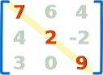
Another example: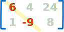
A Transpose is where we swap entries across the main diagonal (rows become columns) like this:
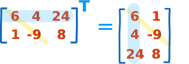
The main diagonal stays the same.
Here are some of the most common types of matrix:
Square
A square matrix has the same number of rows as columns.
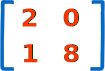
A square matrix (2 rows, 2 columns)
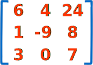
Also a square matrix (3 rows, 3 columns)
Identity Matrix
An Identity Matrix has 1s on the main diagonal and 0s everywhere else:

A 3×3 Identity Matrix
- It is square (same number of rows as columns)
- It can be large or small (2×2, 100×100, ... whatever)
- Its symbol is the capital letter I
It is the matrix equivalent of the number "1", when we multiply with it the original is unchanged:
A × I = A
I × A = A
Diagonal Matrix
A diagonal matrix has zero anywhere not on the main diagonal:
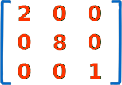
A diagonal matrix
Scalar Matrix
A scalar matrix has all main diagonal entries the same, with zero everywhere else:
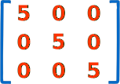
A scalar matrix
Triangular Matrix
Lower triangular is when all entries above the main diagonal are zero:
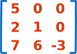
A lower triangular matrix
Upper triangular is when all entries below the main diagonal are zero:
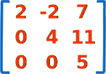
An upper triangular matrix
Zero Matrix (Null Matrix)
Zeros just everywhere:
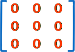
Zero matrix
Symmetric
In a Symmetric matrix matching entries either side of the main diagonal are equal, like this:
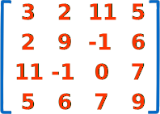
Symmetric matrix
It must be square, and is equal to its own transpose
A = AT
Hermitian
A Hermitian matrix is symmetric except for the imaginary parts that swap sign across the main diagonal:
See how +i changes to −i and vice versa?
Changing the sign of the second part is called the conjugate, and so the correct definition is:
A Hermitian matrix is equal to its own conjugate transpose:
A = AT
This also means the main diagonal entries must be purely real (to be their own conjugate).
It is named after French mathematician Charles Hermite.